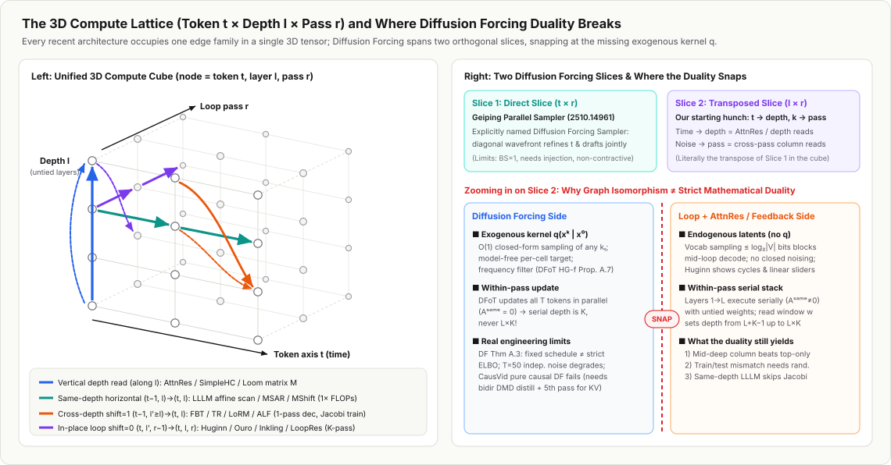
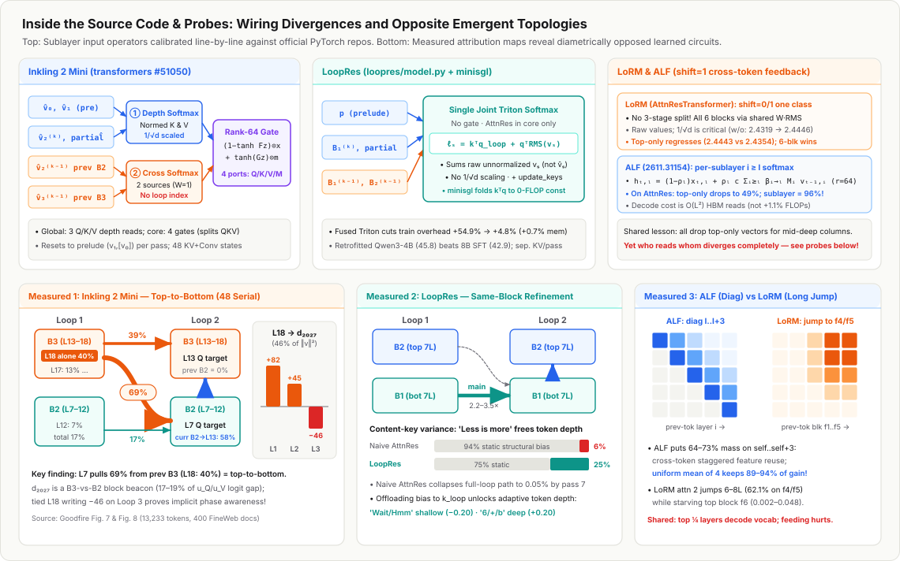
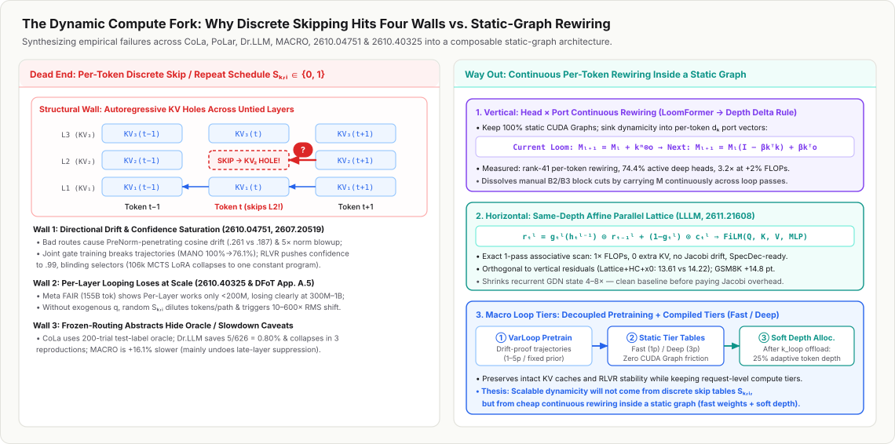

Beyond the Residual Stream: Head-Level Fast Weights, the 3D Compute Lattice, and the Boundaries of Diffusion Forcing Duality
Put the three hottest LLM architecture threads of 2026—depth-wise residual connections, looped transformers, and latent feedback—into a single coordinate system and inspect them down to the PyTorch code, and two surprises jump out. At the micro level, what caps depth-wise routing is not whether you use softmax across layers, but whether you break the single-vector bottleneck with head-level fast weights. At the macro level, transposing Diffusion Forcing into depth does point toward multi-axis state flow, but the analogy snaps cleanly at one missing piece—an exogenous noising kernel—and that exact crack explains why discrete token-level layer routing keeps hitting a wall.
Over the past year, LLM architecture research has pushed simultaneously on three fronts that look separate on paper: rewriting residual connections (AttnRes, SimpleHC, MSAR, LoomFormer), looping middle layers in place on the same token (Huginn, Ouro, Inkling 2 Mini, LoopRes), and feeding deep hidden states from token \(t-1\) directly back into token \(t\) (LLLM, Full-Bandwidth Transformer, Temporal Residual, LoRM, ALF).
This post started from a tempting intuition: what happens if you apply time–depth duality to Diffusion Forcing? AttnRes already transposed the time axis of sequence modeling onto network depth. Diffusion Forcing has two axes—time and noise. Transpose time to depth and you get AttnRes; transpose noise to loop passes and do you automatically get looped transformers, latent feedback, and eventually a dynamic compute graph where every layer learns its own loop schedule?
Following that hunch, I went through the full texts, figures, and open-source implementations of these papers—including Inkling 2 Mini, LoopRes, LoRM, and the newly released LoomFormer. What came out was sharper, and much more interesting, than the original guess: the high-level 2D duality gets half the picture right and leaks through the floor in two critical places.
The first leak is granularity. Talking about time–depth duality at the level of layers and blocks quietly assumes that layer-wise softmax is the ceiling on the depth axis. Yet Loom Attention (LoomFormer) just posted a startling empirical result: a fixed-size linear fast-weight matrix running along depth beats uncompressed Full Softmax AttnRes by 1.73–2.76× in compute efficiency. Drop down one level of granularity—to the hidden wiring matrix between individual attention heads and Q/K/V ports—and the puzzle immediately dissolves.
The second leak is the duality itself. Once you lay every architecture out in a 3D computational lattice (Token \(t \times\) Depth \(l \times\) Pass \(r\)), Diffusion Forcing is a razor-sharp diagnostic lens, not a strict mathematical equivalence. The single load-bearing beam that snaps between the two sides—whether an exogenous forward noising kernel \(q(x^{(k)} \mid x^{(0)})\) exists—explains not only why looped transformers refuse to decode back to tokens at intermediate passes, but also why discrete post-hoc layer routing runs straight into four hard walls, and where genuinely scalable dynamic computation actually lives.
This is not a survey of 2026 architectures. It walks through concrete anomalies, failed naive attempts, and source-code diffs to nail down what holds algebraically and empirically, and to draw a clean line where the analogy stops.
1. The Granularity Blind Spot: Why Layer-Wise Softmax Loses to Head-Level Fast Weights
A standard PreNorm residual stream looks deceptively simple. Writing \(v_i = f_i(h_i)\) for the output of sublayer \(i\) (with \(v_0\) the token embedding), every layer receives an unweighted sum of everything before it:
\[ h_l = h_{l-1} + f_{l-1}(h_{l-1}) = \sum_{i < l} v_i \]AttnRes framed this cleanly: swap the time index \(t\) for the layer index \(l\), and a standard residual stream is just a fixed-state RNN running along depth. Sequence modeling moved from additive fixed-state recurrences \(S_t = S_{t-1} + k_t v_t^\top\) to softmax self-attention because collapsing all history into one vector dilutes early context. AttnRes takes the symmetric step along depth by writing residual connections through a depth-mixing matrix \(M\):
\[ h_l = \sum_{i < l} M_{i \to l} v_i \]Setting \(M_{i \to l} = 1\) gives standard residuals; factoring \(M\) into products of write/read gates (a semiseparable matrix) collapses the sum back into fixed-size multi-stream recurrences (Highway, Hyper-Connections, mHC); setting \(M_{i \to l} = \mathrm{softmax}_i(w_l^\top \mathrm{RMSNorm}(v_i))\) prevents folding and forces the model to keep past layer (or block) outputs for selective retrieval. That is time–depth duality.
The story sounds airtight—until you read the ablation tables and hit two glaring anomalies.
The first sits inside AttnRes's own Table 4. Along the time axis, multiple heads are almost the entire point of self-attention. Yet splitting Block AttnRes into 16 depth-attention heads did not improve validation loss—it worsened it from 1.746 to 1.752.
The second anomaly is far sharper. If time–depth duality means uncompressed softmax along depth should beat fixed-state linear recurrences, how does LoomFormer (arXiv:2611.30634) work? Along depth, LoomFormer uses a fixed-size linear attention recurrence whose per-token matrix state has size just \(2D\) (less than half of mHC's 4-stream \(4D\)) at only 1.95%–3.7% extra FLOPs. On Pile scaling curves, it beats Transformer++ by 3.2× compute, beats mHC, MUDDFormer, and uncompressed Full Softmax AttnRes by 1.73–2.76× compute, and its 300B-token LoomPythia-2.8B (61.6 5-shot average) outperforms the 4× larger Pythia-12B (60.8).
How can a fixed-size linear recurrence along depth decisively beat uncompressed depth-wise softmax?
Two completely different "ranks" along depth
Because we have been conflating depth-mixing rank across layers with head-to-head dynamic wiring rank.
In the circuits view (Elhage et al.), the functional unit of a Transformer is not a layer—it is an attention head. An earlier writer head \(W_i\) produces \(o_i \in \mathbb{R}^d\) and writes it into the residual stream through \(W_i^O \in \mathbb{R}^{d \times D}\); a later reader port \(R_j\) (\(s \in \{Q, K, V\}\)) reads it out via \(W_j^s \in \mathbb{R}^{D \times d}\). The static virtual weight between them is \(\bar{C}_{ij} = W_i^O W_j^s \in \mathbb{R}^{d \times d}\). If an architecture can modulate each head-to-port connection dynamically per token by a scalar \(c_{ij}\), port \(R_j\) receives:
\[ u_j = \sum_i o_i \, c_{ij} \, \bar{C}_{ij} \]Stack all \(w = nl\) previous writer heads against all \(r = 3n\) reader ports of layer \(l\) into a dynamic wiring matrix \(C = [c_{ij}] \in \mathbb{R}^{w \times r}\). Now look at what AttnRes, HC, mHC, SimpleHC, and MSAR actually do: no matter how expressive their inter-layer softmax or 4-stream mixing is, before entering \(W^Q, W^K, W^V\), everything is collapsed back into a single \(D\)-dimensional vector \(h_l\).
That chokepoint is fatal. All \(3n\) reader ports of layer \(l\) stare at the exact same \(h_l\), while all writer heads of each prior layer were already fused together by \(W^O\). Even with per-layer Pre-LN scaling, the dynamic wiring matrix \(C\) is forced into an outer product \(C = g g'^\top\)—its dynamic wiring rank is pinned to \(\le 1\). LoomFormer calls this regime node-gated: you can only turn entire rows or columns on and off. You cannot wire \(W_1 \to R_1\) and \(W_3 \to R_3\) simultaneously on a given token without leaking cross-talk along \(W_1 \to R_3\) and \(W_3 \to R_1\). Theorem 2.4 quantifies the combinatorial price: implementing interference-free routing via node gating requires \(\Theta(w)\) redundant heads per reader port—impossible inside a \(D = nd\) budget.
So Transformers improvise a remarkably wasteful workaround: attention sinks. Unable to disconnect unwanted upstream circuits per token, deep attention heads dump their attention mass onto the first token simply to switch themselves off. LoomFormer's probes at 2.8B scale (Fig. 6c) make the waste visceral: across the back half of the network (layers 17–32), only 22.9% of heads in standard Pythia-2.8B are active non-sink heads, and 4-stream mHC-Pythia-2.8B is even worse at 17.7%—over four-fifths of deep attention heads sit parked on the sink token simply because the residual stream funnels through a single vector at every layer entrance.
A failed naive attempt, and the shape-swap fast-weight fix
How do you push wiring rank above 1? The obvious first attempt is to push AttnRes down to head granularity: let every reader port \(R_j\) at layer \(l\) run content-dependent softmax directly over all \(nl\) raw upstream head outputs \(o_i\) (Naive Loom Attention):
\[ u_j = \sum_{i=1}^{nl} \alpha_{ij}(x) \, o_i, \qquad \alpha_{\cdot j}(x) = \mathrm{softmax}(x W_j^\alpha) \]Do the parameter accounting and it explodes immediately. Across \(L\) layers and \(3n\) ports per layer, the port weight matrices \(W_j^\alpha \in \mathbb{R}^{D \times nl}\) alone cost \(\frac{3}{2} n^2 L^2 D\) parameters and MACs—roughly 70% of an entire 1.4B XL model. This is the exact same dilemma sequence modeling hits at long context: once the "depth KV cache" grows from \(L = 32\) layers to \(nL = 1024\) heads, full softmax becomes prohibitively expensive.
Sequence modeling's answer is linear attention / Fast Weight Programmers: compress the growing KV cache into a fixed-size associative memory matrix \(S_t = S_{t-1} + k_t \otimes v_t\). Porting that move directly to the head-level depth axis yields LoomFormer: alongside the standard vector stream \(x \in \mathbb{R}^D\), maintain a second per-token matrix fast-weight stream \(M \in \mathbb{R}^{d_k \times d}\) (\(d_k = 2n\) slots of head width \(d\), total state just \(2nd = 2D\)).
Compare the read/write interfaces of the two streams, and you see an elegant shape swap:
\[ \begin{aligned} \text{Vector stream (control):}\quad & u_j = x W_j^s, \qquad\;\; \Delta x = o_i W_i^O \\ \text{Matrix stream (content):}\quad & u_j = q_j^{m,s}(x)\, \widetilde{M}, \quad \Delta M = k_i^m(x) \otimes o_i \end{aligned} \]In the vector stream, data is a vector \(x\) and ports are huge, frozen weight matrices \(W_j^s \in \mathbb{R}^{D \times d}\). In the matrix stream, data upgrades to a matrix \(M\), and ports shrink to tiny \(d_k\)-vectors \(q_j^{m,s}(x)\) and \(k_i^m(x)\)—small enough to be generated dynamically from \(x\) for every token, every head, and every \(Q/K/V/O\) port. Each head's unmixed output \(o_i \in \mathbb{R}^d\) writes into \(M\) via outer product (alongside \(\mathrm{FFN}_M\), the sole bridge injecting vector-stream content into \(M\)); downstream heads read \(\tilde{q}, \tilde{k}, v\), and a direct pass-through \(o^m\) from the whole-matrix normalized \(\widetilde{M} = \mathrm{MNorm}(M)\). Horizontal attention even switches to a strictly causal mask (\(s < t\)), handing same-token vertical composition cleanly to \(o^m\).
That single move rewrites the economics of depth:
- Wiring rank jumps by an order of magnitude: \(C = K Q^\top\) has theoretical rank \(\min(d_k, 3n) = 2n\); at layer 32 of LoomPythia-2.8B, measured dynamic effective rank reaches 41.0 (90.7% of dynamic energy lies outside rank 1), with effective rank 20.9 even within Q, K, or V individually.
- Unparking sink-locked heads: active non-sink heads in layers 17–32 jump from 22.9% (Pythia) and 17.7% (mHC) to 74.4% (4.2× mHC), while attention mass on the first two tokens collapses from 27.2% to 1.5%.
- Low memory bandwidth, real speed: shrinking \(d_k\) to 16 (matrix state just \(1D\), total \(2D\)) still beats \(4D\) DHC and average-\(9D\) MUDDFormer (Fig. 7). With custom fused Pallas/Triton kernels—fusing the prior layer's two MWrites with the current layer's MShift + MNorm + 4 MReads into one HBM pass—TPU v5p training holds 89%–92% throughput and A800 BF16 decoding holds 84%–92%.
Three independent pieces click into place
Look back at three seemingly unrelated 2026 papers through the "granularity × fast-weight" lens, and every piece locks together:
- SimpleHC (2611.05984) shows layer-level fast weights need no mixing matrix and naturally yield depth-wise chunkwise linear attention: Hyper-Connections and mHC add under 1% FLOPs yet slow end-to-end training by 7%–27% from repeatedly moving an \(nC\)-wide state—and blow up with \(1.9 \times 10^6\) gradient spikes under high-LR stress tests at 230B-A6B. SimpleHC fixes the Sinkhorn mixing matrix to the identity \(H_l^{\mathrm{res}} = I\), matches mHC across 15B and 30B MoEs (63.1 vs 62.9 14-benchmark average) while eliminating the spikes, and observes that \(H_l^{\mathrm{res}} = I\) collapses the multi-stream recurrence into pure outer-product accumulation \(X_j = X_L + \sum_{k=L}^{j-1} h_k^{\mathrm{post}} o_k^\top\). Sharing the group-entry state \(X_L\) to compute read/write gates across \(K = 4\) consecutive sublayers turns layer \(j\)'s read into exact depth-wise chunkwise linear attention: \[ u_j = \underbrace{X_L^\top \bar{h}_j^{\mathrm{pre}}}_{\text{one batched cross-chunk read}} + \sum_{k=L}^{j-1} \underbrace{\big((\bar{h}_j^{\mathrm{pre}})^\top \bar{h}_k^{\mathrm{post}}\big)}_{\text{intra-chunk lower-triangular scalar } D_{j,k}} o_k \] HBM traffic per sublayer drops in half from fused mHC's \(18C\) to \(9C\), memory drops 31%, and training overhead shrinks to 2.4% at width 6144.
- MSAR (2610.13630) explains why splitting AttnRes along channels fails: slicing a layer-sum vector that has already been globally rotated by \(W^O\) into 16 slices destroys semantic coherence. Staying at layer granularity, MSAR has to borrow diversity from the time axis instead—keeping single-stream block summaries \(b_j \in \mathbb{R}^d\) in memory, then expanding 4 full-dimensional local views on the fly via causal 1D depthwise convolutions (widths \(1, 4, 8, 12\)). That delivers 1.58× compute efficiency (vs AttnRes's 1.35×)—and removing the temporal convolution wipes out 75% of MSAR's gain over AttnRes.
- Inkling 2 Mini already stepped halfway into port splitting in code: many assume Inkling 2 Mini is plain Block AttnRes, but
modeling_inkling2_loop.pyreveals 3 separate depth readers (Q/K/V) on every 6th global attention layer, plus 4 separate cross-loop readers and rank-64 gates (Q/K/V/MoE) on all 12 core layers—even breaking fused QKV GEMMs on Passes 2 and 3 to pay for it. Goodfire's Fig. 7 explains why it was worth it: in cross-loop routing, 60%–62% of the logit gap for Q and V comes from top outlier coordinates, versus only 30%–32% for K and MoE. Different ports simply want different circuits.
This also kills a neat-sounding myth: that time-axis queries are input-dependent while depth-axis \(w_l\) is naturally static. Even AttnRes's own Table 4 shows dynamic \(q_l(h)\) beats static \(w_l\) (1.731 vs 1.737; static was kept purely for inference batching), and LoomFormer's Table 4 shows freezing read ports drops 24.6% of the gain while freezing both reads and writes drops 44%–46.4% (collapsing back to node-gated Prop. 3.1(i)). The true asymmetry between time and depth is not static vs. dynamic queries—it is Teacher Forcing: time has ground-truth tokens \(x_{1\dots T}\) available in parallel during training, whereas intermediate layer representations \(v_{1\dots L}\) have no external targets and must unroll sequentially.
Takeaway: On the depth axis, the real dividing line is not "softmax replacing linear recurrence"—it is breaking layer-level vector collapse (wiring rank 1) into head × port dynamic fast weights (wiring rank \(2n\)). And LoomFormer's depth fast-weight matrix is still using the simplest additive linear-attention update (\(\Phi_l = I\), \(M_{l+1} = M_l + \sum_i k_i^m \otimes o_i\), relying purely on
MNormto bound norm). Following sequence modeling's trajectory from Linear Attention to Gated DeltaNet, upgrading the depth matrix stream to a forgetting gate or depth-wise Delta Rule (\(\Phi_l = I - \beta_i (k_i^m)^\top k_i^m\)) is the cleanest unbuilt square on the board.
2. The 3D Compute Lattice, and Where Diffusion Forcing Duality Actually Breaks
With single-pass depth granularity clear, lift the camera one dimension into the other great convergence of 2026: Looped Transformers, Latent Feedback, and Diffusion Forcing.
Whenever you try to shoehorn all of these into a 2D "time–depth transpose" of Diffusion Forcing, the narrative starts twisting in on itself—first mapping time to depth, then mapping refinement passes back to time for latent feedback. That friction happens for one simple reason: we are forcing a 3D object into a 2D transpose.
Modern LLM architectures live inside a 3D computational cube: Token \(t \times\) Depth \(l \times\) Pass \(r\). Drop every "extra-axis" architecture from the last year into this cube, and they separate cleanly into three geometric edge families:
- Same-depth horizontal persistent state \((t-1, l) \to (t, l)\): 1× FLOPs, zero Jacobi iterations.
Beyond MSAR's local temporal conv and LoomFormer's
MShift(mixing \(M_{l,[t-1]}\), worth 13.7%–15.2% of its gain), the cleanest realization of this axis is Latent Lattice Language Models (LLLM, arXiv:2611.21608). Alongside the vertical residual stream, each layer carries a Mamba-style diagonal affine recurrence along time: \[ r_t^\ell = g_t^\ell(h_t^{\ell-1}) \odot r_{t-1}^\ell + \big(1 - g_t^\ell(h_t^{\ell-1})\big) \odot c_t^\ell(h_t^{\ell-1}) \] which modulates that layer's Q, K, V (controlling both attention retrieval and KV writing) and MLP via zero-initialized FiLM. The decisive trick: both the gate \(g_t^\ell\) and candidate \(c_t^\ell\) depend only on the vertical input \(h_t^{\ell-1}\), never on \(r_{t-1}^\ell\). That means the entire training sequence computes in one exact associative parallel scan—zero extra KV cache, zero train–inference mismatch. At 406M/20B, LLLM cuts validation PPL from 15.41 to 14.40 (matching a 1.5× deeper 40-layer model), boosts GSM8K-Aug by +14.8 points (29.7% → 44.5%), stacks strictly orthogonally with vertical residual upgrades (Lattice + HC + x0 = 13.61vsHC + x0 = 14.22), and lets Gated DeltaNet outperform standard GDN with a 4–8× smaller recurrent state. - Cross-depth horizontal feedback (
shift = 1) \((t-1, l' \ge l) \to (t, l)\): 1 pass at decode, parallel Jacobi passes at training. FBT, Temporal Residual, LoRM, and ALF bypass autoregressive generation's narrow \(\le \log_2 |V|\)-bit discrete bottleneck by feeding mid-to-deep continuous states from token \(t-1\) back into token \(t\). Streaming decode runs in a single pass, while parallel training iterates \(h_t^{(p)} = f(e_t, h_{t-1}^{(p-1)})\) toward a fixed point. - In-place looping (
shift = 0) \((t, l', r-1) \to (t, l, r)\): \(K\) passes at decode too, trading compute for serial depth. Huginn, Ouro, Inkling 2 Mini, and LoopRes iterate on the same token. In LoRM's source code,AttnResTransformerimplements families 2 and 3 inside the exact same class—they differ by a single integer flag,shift = 1vsshift = 0.


Placing Diffusion Forcing in the cube: two slices, four real fractures
Inside this 3D cube, Diffusion Forcing snaps into crystal focus—not as a grand unified theory of everything, but as two mutually transposed 2D slices:
- The direct slice \((t \times r)\): Back in October 2025, Geiping et al. (arXiv:2510.14961) explicitly named their parallel Huginn sampler the Diffusion Forcing Sampler—treating token index \(t\) as time and loop pass \(r\) as noise level so partially converged earlier tokens and draft later tokens refine together along a diagonal wavefront (4.4–4.8× speedup at batch size 1).
- The transposed slice \((l \times r)\): Our original intuition—transposing time onto depth \(l\) and noise onto loop passes \(r\).
From 30,000 feet, the transposed diagram looks uncannily isomorphic: both sides have encode–transition–decode blocks (VAE Enc / DiT / VAE Dec vs. Prelude / Core / Coda), same-pass prefix reads (CausVid cached KV vs. Block AttnRes), and cross-pass reads (DFoT full-sequence attention vs. cross-loop depth reads). Read the equations and appendices of Diffusion Forcing, DFoT, and CausVid all the way through, however, and calling this a "strict mathematical duality" covers up four real fractures:
- The decisive fracture: no exogenous noising kernel \(q(x^{(k)} \mid x^{(0)})\).
Why must Diffusion Forcing return to data (or VAE latent) space \(x_t\) on every pass, while looped transformers refuse to decode through
lm_headbetween passes? It is not merely because discrete tokens lose bandwidth—it is because Diffusion Forcing runs Bayesian filtering along time and diffusion along passes: whenever observation \(x_t\) gets one step cleaner, the belief state \(z_t\) must be recomputed, and the entire forward corruption \(q(x_t^{k_t} \mid x_t^0) = \mathcal{N}(\sqrt{\bar{\alpha}_{k_t}} x_t^0, (1-\bar{\alpha}_{k_t})I)\) is exogenous, closed-form, and model-independent. That kernel \(q\) buys everything that makes DF magical: \(O(1)\) one-step sampling of arbitrary noise schedules, model-free per-cell denoising targets, and DFoT's actual headline mechanism—History Guidance (especiallyHG-f, where partially noised history acts as a frequency-domain low-pass filter, Prop. A.7). Looped LMs cannot project through a \(\le \log_2|V|\)-bit vocabulary mid-loop, so state stays in an endogenous latent space. Without \(q\), there is no closed-form noising, no per-cell target, and not even guaranteed contraction toward a fixed point: Huginn §7 (Figs. 11–12) measures multi-dimensional periodic orbits and unidirectional linear sliders alongside fixed points. - Two paper-level illusions worth clearing up: - DF does not yield a strict ELBO for arbitrary fixed schedules—the original paper's Theorem A.3 (p. 16) explicitly notes that for a fixed noise schedule, the training objective "need not be a lower bound" (it is a surrogate assuming infinite capacity and sufficient statistics). And DFoT App. A.5 (p. 19) reports that even with an exact Gaussian kernel, fully independent per-frame noise already degrades sampling quality once sequence length hits \(T = 50\). - CausVid (2412.07772) is not a proof that pure causal Diffusion Forcing works! Its Table 4 and Fig. 8 show pure causal DF fails badly under error accumulation on 30-second videos (visual quality collapses from 0.66 to 0.46). CausVid's fast 4-step quality comes from asymmetric DMD distillation from a 50-step bidirectional teacher (64 H100s for 2 days)—and after 4 denoising steps, it must run a 5th \(t=0\) forward pass purely to write clean KV entries, giving up arbitrary schedules altogether. Splicing DFoT's cross-pass reads together with CausVid's causal KV treats two incompatible samplers as one prototype.
- Parallel vs. serial within a pass—a common dependency-depth miscalculation: Reasoning loosely from the 2D transpose, it is easy to claim that "the noise axis only survives if each layer reads only its own previous pass," or to assign DFoT a serial depth of \(L \times K\). That mixes up the execution graphs: DFoT updates all \(T\) tokens in parallel within a pass (\(A^{\mathrm{same}} = 0\)). Even with unmasked full-sequence attention to the previous pass, its serial depth is \(K\), never \(L \times K\), and its noise axis remains completely intact. What blows serial depth up to \(L \times K\) under full cross-pass reads is the inherently sequential bottom-up execution of network depth.
- The genuine causality question belongs to depth alone—Layer Ontology: Strip away the DF excuse and a deep architectural question remains: if layer 1 on pass 2 reads the final layer of pass 1, is it still "layer 1 refining early features," or has it effectively become a weight-tied "layer \(L+1\)"? Take an \(L\)-layer network run for \(K\) passes. As ALF notes, shallower layers from the previous pass were just overwritten in the current pass, so useful cross-pass reads only look at self or deeper layers (window \(w\) upward): - At \(w = 0\) (self only), maximum serial chain length is \(L + K - 1\): shallow layers stay anchored to raw inputs and can be skipped cleanly once inputs settle. - At \(w > 0\), serial depth stretches to \(L + (K-1)(w+1)\). - When top feeds bottom (\(w = L-1\)), serial depth saturates at \(L \times K\), folding the looped block into a deeper periodic-weight network.
So when you leave the choice to gradient descent, what do real models actually learn—in-place refinement, or a folded deep stack? Open the source code and probes, and the answer is genuinely surprising.
3. Inside the Source Code and Probes: Four Independent Designs, Opposite Topologies, and the Fast-Weight Paradox
Over the last few months, four independent teams—Thinking Machines (Inkling 2 Mini), NUS (LoopRes), IFM (LoRM), and HKU/Yale (ALF)—converged on the same high-level skeleton: stop feeding back a single top-layer vector, and instead combine within-pass depth reads with cross-pass / cross-token reads over an entire column of mid-to-deep states.
Three independent ablations leave zero doubt why:
- LoRM (134M iso-FLOP): vanilla Transformer 2.4690 → +AttnRes 2.4354 → feeding back only the top state regresses to 2.4443 → feeding all 6 blocks drops to 2.4319 (widening to a 0.017-nat lead at 4× data).
- ALF (1.6B–4.0B MoE): on a standard residual backbone, top-layer input injection captures 77% of the gain; switch to an AttnRes backbone, and top-layer injection gets cut in half to 49%, while keeping only per-sublayer cross-token feedback retains 96% (keeping only the top quarter of blocks retains just 21%, whereas a single middle block retains 40%).
- Temporal Residual (4.2B) & Inkling 2 Mini: write strengths \(s_B\) across the top third of layers (L20–31) drop below 0.1, leaving top-only Recycler with one-fifth of Temporal Residual's gain; looping the middle 12 layers of Inkling 2 Mini beats looping the final 12 layers on 27 of 28 benchmarks (1.51–1.91× vs. 1.24–1.36× effective compute savings).
That is where consensus ends. Line up the PyTorch implementations next to the published attribution maps from Goodfire, LoopRes, ALF, and LoRM, and three sharp divergences leap off the page.


Clue 1: Inkling 2 Mini and LoopRes learned opposite layer ontologies
Looking only at block diagrams, it is easy to assume that every model avoids top-to-bottom wraparound and settles into local refinement. Goodfire's Fig. 8 exact linear attribution tells a far more dramatic story.
In Inkling 2 Mini, the looped core consists of Block 2 (L7–12) and Block 3 (L13–18). Across 13,233 FineWeb tokens, Goodfire measured: - At the bottom of the loop (Layer 7, Q input), 69% (Loop 2) and 65% (Loop 3) of cross-loop weight comes from the previous pass's Block 3—with the topmost core layer L18 alone accounting for 40% (Loop 2) and 34% (Loop 3), while previous Block 2 gets only 17% and 13%! - At Layer 13 (start of Block 3), weight on previous Block 2 drops cleanly to 0%: current-pass Block 2 already supplies 58% / 54% via depth attention, so cross-loop attention puts all 39% / 42% on previous Block 3 (L18 alone taking 23% / 22%).
Trained from scratch, Inkling 2 Mini spontaneously wired a strong top-of-core to bottom-of-core highway (\(L18 \to L7\))—maximizing full 48-layer serial depth while letting Block 3 refine itself across passes.
Now look at LoopRes (Fig. 7a–b), which retrofits a pretrained Qwen3 via SFT. It learned the exact opposite: Block 1 reads previous Block 1 2.2–3.5× more strongly than previous Block 2, while Block 2 primarily reads current Block 1 (adding previous Block 2 only by pass 7)—pure same-block in-place refinement. Meanwhile, on the shift = 1 feedback side, ALF (Fig. 9) concentrates 64%–73% of its mass on self plus 3 layers above—replacing learned softmax with a fixed uniform average of those 4 sources cuts 60% of cross-layer reads while retaining 89%–94% of the gain, showing ALF is really doing cross-token staggered feature reuse rather than iterative denoising. And LoRM—whose code has no prelude/core/coda split at all—shows shallow attn 2 jumping 6–8 layers to put 62.1% of its weight on mid-deep blocks f4/f5 (L7–10) across three seeds while starving top block f6 down to 0.002–0.048.
Why the split? Training initialization explains it cleanly: pretraining from scratch lets gradient descent build a full folded 48-layer deep network (B3 → B2); SFT from frozen-role pretrained Qwen3 weights hits severe representational mismatch if you pour deep features back into shallow layers, so the optimizer settles on gentle same-block refinement.
Clue 2: The \(d_{2027}\) detective story, and LoopRes's "content-key paradox"
Next is an instructive mechanistic contrast that is easy to conflate.
Among Inkling 2 Mini's 2,304 residual dimensions, Goodfire found a giant outlier coordinate: \(d_{2027}\) has a post-RMSNorm mean of +32.4, swallowing 46% of the entire squared norm of the vector by itself. Even stranger is how L18 writes to it (Goodfire Fig. 7): - At the end of Loop 1, L18's MoE slams +82 into \(d_{2027}\) (Attn +17). - At the end of Loop 2, L18 writes +45 (MoE) and +30 (Attn). - At the end of Loop 3—with identical shared weights and zero explicit loop-index input—L18's MoE and Attn suddenly reverse sign and write −46 and −31, erasing \(d_{2027}\) cleanly!
At first glance, it is tempting to equate \(d_{2027}\) with LoopRes's explicit per-pass static key \(k_{\text{loop}}\)—an improvised "loop counter" because readers cannot tell passes apart. Checking modeling_inkling2_loop.py rules that out: Inkling 2 Mini's cross-loop softmax is strictly Markov (\(W = 1\)), always choosing between just B2 and B3 of the single previous pass—it never compares states from different passes in the same softmax! Expanding the two-way logit gap \(\mathbf{u} \cdot (\hat{\mathbf{v}}_3 - \hat{\mathbf{v}}_2)\), Goodfire proved \(d_{2027}\) is first and foremost a block-selector beacon ("pick B3, not B2," single-handedly driving 17% of L13's \(u_Q\) gap and 19% of \(u_V\)). What genuinely reveals implicit loop-phase tracking is L18 erasing that beacon on Loop 3 once no next loop remains.
LoopRes faces a genuinely different problem: its single joint softmax mixes sources from multiple past passes together. Because the same block's outputs across passes have cosine similarity 0.65–0.88, naive AttnRes without explicit loop keys suffers catastrophic collapse by pass 7—the full-loop path weight plunges from 33.7% to 0.05%, while the 1-pass shortcut grabs 26.5%.
LoopRes's deepest finding sits in Fig. 8c–d, which they call "Less is more for content keys":
- In naive AttnRes, 94%–98% of content-key score variance is wasted encoding static structural preferences ("which block to read"), leaving just 2%–6% genuine token-varying content variance (3% at 7 loops).
- Offloading 78%–90% of structural selection onto explicit per-pass static keys \(k_{\text{loop}}\) (which fold into zero-FLOP float constants k_loop @ q_loop at load time in minisgl) makes token-varying content variance jump from 6% to 25% (12× on input keys, 2% → 24%). Adaptive token-level depth emerges spontaneously: filler/hesitation words ("But", "Wait", "Hmm") route shallower (−0.20), while digits and math operators ("6", "b", "+", "8") route deeper (+0.20).
Yet put LoopRes next to Huginn Remark 3.1 and a fundamental architectural tension snaps into view: LoopRes shows removing explicit loop keys costs 2 full points at \(L = 7\) (57.8 → 55.8), and Meta FAIR's 149-page study (2610.40325) confirms unspecialized tied weights saturate fast past \(L \ge 4\). Yet Huginn Remark 3.1 explicitly warns that injecting DiT-style step conditioning destroys path independence and kills depth extrapolation! Sharp coordinate identity within a fixed pass budget vs. arbitrary test-time extrapolation remains an unsolved trade-off.
Clue 3: The block-boundary vs. fast-weight paradox in Inkling 2 Mini
Finally, bring Section 1's fast-weight lens back to Inkling 2 Mini's code, and a sharp question falls right into your lap:
Why does Inkling 2 Mini still accumulate 6 layers inside each block with plain +, and then slice its 12-layer core artificially into Block 2 and Block 3?
Run the thought experiment: merge the 12 core layers into one block accumulated with +. Now the cross-loop softmax pool contains exactly 1 vector, softmax outputs a constant 1.0, and the entire cross-loop attention mechanism vanishes. In other words, manually splitting B2 and B3 exists largely to keep \(\ge 2\) addressable slots alive after + collapses the block!
Notice the systems irony: on the sequence axis, Inkling 2 Mini already allocates separate KV caches for every pass (24 physical layers → 48 KV and conv states, doubling cache memory), yet on the depth axis it still smashes 6 layers together with +. That points directly to an unbuilt, strikingly clean synthesis:
Takeaway: Replace intra-block
+inside a looped core with a LoomFormer-style head-level fast-weight matrix \(M \in \mathbb{R}^{d_k \times d}\) carried continuously across loop passes. Because the fast-weight memory evolves on every pass, a single physical block naturally changes its effective behavior from pass to pass—eliminating arbitrary B2/B3 splits while upgrading cross-loop connectivity from port rank 3 to head rank \(2n\).
4. The Physics of Continuous Loops: Implicit CoT and the BPTT Split Law
Before turning to dynamic compute graphs, it helps to untangle a family of mechanisms often flattened into one ladder. Explicit CoT, Coconut, CoTFormer, Latent Feedback, and Looped Transformers occupy distinct corners of three orthogonal axes:
| Mechanism | Axis 1: Where computation unrolls | Axis 2: Cross-step state bandwidth | Axis 3: KV cache visibility |
|---|---|---|---|
| Explicit CoT | Across tokens (longer output) | 1 discrete token (\(\le \log_2 |V|\) bits) | 1 KV entry per CoT token |
| Coconut (2412.06769) | Mode switch; inserts latent thought slots | Top \(h_{t-1}\) replaces \(e_t\) | 1 KV entry per latent slot |
| Latent Feedback (FBT / TR / LoRM / ALF) | Across tokens, parallel with discrete \(e_t\) | Top vector / side stream \(B\) / column of blocks or sublayers | Native 1 KV / token (no extra slots) |
| Looped Transformer (Huginn / Ouro / Inkling / LoopRes) | In place on the same token (\(K\) passes) | Top state or column of mid-deep blocks | Independent KV per pass by default (compressible) |
| CoTFormer (2310.10845) | In place on the same token (\(K\) passes) | Each pass's intermediate output \(x^{(i)}\) | All intermediate passes interleaved in KV (seq len \(\times K\)) |
(A common classification slip worth correcting: CoTFormer is not a Coconut-style mode switch replacing discrete tokens—it loops in place and interleaves all \(K\) intermediate pass states into the KV sequence so later tokens can attend to every earlier pass.)
Across these mechanisms, two hard empirical laws have crystallized—and the second exhibits a striking sign flip when two recent studies are placed side by side.
Law 1: Continuous loops buy multi-hop manipulation and fewer dead ends, not factual recall
Thinking Machines' variable-loop research checkpoint TML-d24-varloop-research (Stage 2 mid-training sampling 1–5 passes with weights 1:2:6:2:1; SFT and RL fixed at 3 passes) gives the cleanest cross-capability readout to date (Figure 4, right):
- Long-context retrieval and multi-step coding shoot up: going from 1 to 4–5 passes pushes MRCR v2 256K–512K from 26.2% to 93.4%, DeepSWE v1.1 from 0.7% to 48.2%, and ARC-AGI-2 from 0.8% to 27.1%. On no-CoT N-Hop Lookup, performance keeps climbing all the way out to 10 passes (2× the training maximum).
- Closed-book factual recall stays completely flat: SimpleQA sits stuck at 6.3%–7.3%, confirming Ouro's (2510.25741) controlled experiments—looping multiplies knowledge manipulation (Mano 3×4 hits 92.2% vs. 34.8% for an iso-depth non-looped baseline) while static factual capacity remains pinned at ~2 bits/parameter.
- Shorter CoT is not steganography—it is less backtracking: on the subset of GPQA Diamond questions solved across all 1–5 passes, reasoning trace length drops from 3,703 tokens to 1,731 (3 passes) and 1,661 (5 passes). Sentence length (8.9 → 8.7) and English dictionary ratio (94.6% → 94.4%) barely budge; what gets cut nearly in thirds are hesitation markers ("wait" / "actually" / "hmm"), plunging from 9.7 to 3.9 and 3.6 per trace. Temporal Residual similarly shortens competition math traces by 9%–16% and pushes filler-token GSM8K from 21.5% to 40.0% (zeroing stream \(B\) immediately collapses it back to 20.2%). From the data side, LoRM's scaling law (2611.20404) pins down the exact crossover: once unique tokens per parameter (UTPP) exceed 33–75—modern 1B–10B dense models sit well above 260 UTPP—latent feedback beats multi-epoch repetition, saving up to 48% compute or 47% unique data (while losing to vanilla Transformers in extreme data scarcity at UTPP = 12.5, 1 epoch, matching ALF §5).
![Figure 4: Left: Temporal Residual (Table 4 & Fig. 4) across training recipes—under shift=1 cross-token feedback, 2-pass full BPTT gets the lowest validation loss (0.5569) yet zero decode gain (67.7%), 6-pass full BPTT carves a brittle spike at K=6 (71.6%), and only 6-pass truncated BPTT (last 2) flattens the curve (0.5588) to hit 75.8%—the exact reverse of shift=0 in-place looping (Xiong 2610.26030), where full BPTT dominates. Right: Measured capability separation on TML-d24-varloop from 1 to 5 passes.](fig4_bptt_split_varloop.svg)
Law 2: The BPTT Split Law—why shift = 0 and shift = 1 demand opposite backprop regimes
Put two rigorous empirical papers released weeks apart side by side in Figure 4 (left), and a remarkable contradiction emerges:
- In
shift = 0in-place looping, full BPTT beats truncated BPTT across the board. Xiong et al. (arXiv:2610.26030) fit joint scaling laws over forward passes \(T\) and backprop passes \(B\) across ~600 controlled runs: once \((T, B)\) are jointly optimized, fewer full-BPTT passes (e.g.,(4, 4)) consistently beat more truncated passes (e.g.,(8, 2)), and with model size free, the optimal point is simply full BPTT at 2 passes (~27% fewer non-embedding parameters, only +8% training FLOPs to beat compute-optimal non-looped baselines). - In
shift = 1cross-token feedback, fixed-\(K\) full BPTT catastrophically overfits—truncation is what saves you. Look at Temporal Residual Table 4, where minimum validation loss correlates with exact autoregressive decode accuracy in the wrong direction (\(r = +0.89\)!): 2-pass full BPTTachieves the lowest validation loss of any run at \(K = 2\) (0.5569), blows up to0.5767by \(K = 8\), and scores67.7%on real decoding (zero gain over the67.9%baseline).6-pass full BPTTpushes loss above0.60for \(K < 5\), carves a narrow valley right at \(K = 6\) (0.5577), rebounds by \(K = 8\), and reaches only71.6%.- Switching to 6 forward passes, backpropagating only the last 2 flattens loss into a horizontal line across \(K = 3\dots 8\) (
0.5587–0.5588, spread 0.0001) and lifts exact decoding to75.8%(+7.9 points). - The same trap springs elsewhere: LLLM's top-to-bottom variant
J3cuts 3-pass Jacobi PPL to14.026but degrades to14.733under exact 1-pass streaming decode (worse than single-pass LLLM without feedback at14.545); and FBT's3% 3-passschedule, stable to 1,000 passes at 200B tokens, collapses below baseline within 6 passes at 400B tokens (App. E Fig. 11b/d), forcing4-passor25% 3-passmixes.
The physics behind the split is clean. Under shift = 0, training and inference run the same finite pass count \(K\), so full BPTT can safely exploit every gradient path inside that fixed-depth graph. Under shift = 1, training runs \(K \in \{2..6\}\) parallel Jacobi sweeps, whereas deployment runs \(T \sim 10^4\) sequential forward substitutions. Full BPTT at fixed \(K\) lets the network co-adapt all \(K-1\) intermediate passes into a fragile finite-step circuit that only lands cleanly on step \(K\) and diverges past it. Truncating BPTT (Temporal Residual's last-2, LoRM's no_grad prefix sweeps) breaks multi-step conspiracy and forces the model to learn a contractive operator—one that pushes any rough iterate closer to the fixed point at every step.
Two extra systems bills come attached to cross-depth shift = 1 feedback: in GRPO RL, Temporal Residual collapses from 76% to 13% within 100–150 steps unless you cache exact rollout hidden states for on-policy state replay (leaving asynchronous/off-policy RL open); and in speculative decoding, cross-token feedback breaks parallel draft verification—IFM's Feedback Shortcut (2611.28227) recovers 2.4–2.8× speedup only via MTP-head state alignment (raw MTP states blow up at 780M) plus pipelined correction, and so far only for single-vector top-layer feedback, not multi-block AttnRes/ALF. By contrast, LLLM's same-depth affine parallel scan pays none of those three bills.
5. Flipping the Question: What Actually Blocks Learnable Dynamic Compute Graphs?
At this point, an obvious counter-question forces itself forward:
Inkling 2 Mini's "1-3-3-1" is still a static execution table \(S_{k,i} \in \{0, 1\}\) hard-coded at design time. If some layers need more compute than others—and where you put loops matters hugely (middle 12 beats last 12 on 27/28 benchmarks)—why not make the execution table learnable, or route it dynamically per token?
Following the Diffusion Forcing analogy, the textbook blueprint sounds effortless: pretrain the weights under randomized independent per-layer loop counts while telling readers how many times each source was updated, then freeze the weights and learn or search an optimal schedule \(S_{k,i}\).
One piece of that blueprint is genuinely right: trajectory training and exit/routing policy learning must be decoupled. Popescu et al. (arXiv:2607.20519) ran a sharp causal-swap test on 4-layer synthetic arithmetic/parity tasks: jointly training the exit gate with recurrent weights craters final-pass accuracy from 100.0% to 76.1%, and freezing the corrupted trajectory to retrain a fresh gate never recovers it. Train the trajectory first with a fixed geometric prior so every depth gets supervision, then attach a simple confidence margin on top, and the model reaches 99% in 1.55 passes. (Note: §5.5 of the paper explicitly states they did not retrain Ouro; on frozen Ouro-1.4B/2.6B, the native gate is actually competitive, and post-hoc readouts win strictly on only 3 of 12 benchmark/model pairs—the causal-swap result comes from the controlled 4-layer suite.)
Read the full text of the past year's dynamic layer-routing papers rather than skimming their abstracts, however, and you discover that turning per-token discrete schedules \(S_{k,i}\) into a practical LLM runs straight into four walls far harder than "missing randomized pretraining."
Draining the abstract hype from frozen-routing papers
Skimming headlines from CoLa, PoLar, Dr.LLM, and MACRO makes discrete layer routing look almost solved. Open the experimental setups, and the air rushes out fast:
- CoLa (2507.07996) learns no router at all: it runs 200 MCTS perturbations per test example using ground-truth test answers as reward—an oracle upper bound (which is why on 4-way ARC-E, even a weak 27.8% base model hits the exact same 95.80% as five much stronger models).
- PoLar (2606.06574) is the same authors' follow-up, evaluated strictly on no-CoT direct prompting (crushing Qwen2.5-3B to 17.7%/1.5%); headline gains are oracle
pass@5, actual compute savings are 0.24–0.70 layers out of 24 (<3%), and independent MMLU reproduction (2610.04751) either underperforms vanilla forward passes or collapses to "never route." - Dr.LLM (2510.12773) advertises "saving 5 layers per question" in the abstract—until Table 3 reveals that is cumulative layer-tokens summed across the entire generated answer (6-model mean
626.1 → 621.1layers): 0.80% compute saved, not 5/32 (15.6%)! Worse, it drops −0.85 OOD in its own paper and collapses across three independent reproductions: PoLar (0%–5.8%), MACRO (5/6 models drop 4.3–7.6 points), and Štefánik (.660 → .623). - MACRO (2608.05872) is not just skip/repeat—its actual mechanism is jumping backward across layers and adding historical residuals (\(h_t + \gamma h_{t-b}\)). Its +5.0% mean leans heavily on truncating small reasoning models at 400 thinking tokens (Llama-3.2-3B leaves routes unchanged on 11/13 tasks for +0.33), measured inference is +16.1% slower, and Logit Lens (Fig. 5) shows it mostly works by stopping late layers from suppressing an already-computed answer.
The four hard walls blocking discrete dynamic compute graphs


- Wall 1: Directional drift through PreNorm, and post-training "confidence blindness" (2610.04751).
Štefánik et al. found something nastier than norm mismatch: while PreNorm mostly washes away magnitude errors on bad routes, directional shift (cosine distance .261 vs. .187) passes straight through normalization; looping a frozen model 8 times inflates norm 5×, and the mean update directions of "fixed" and "broken" routes have +0.98 cosine similarity. Tracking OLMo-3-7B across SFT → DPO → RLVR reveals an even deeper blow: even though transferable oracle routing headroom stays at +18% to +24% throughout post-training, RLVR saturates prediction confidence from
0.59to0.99, blinding every confidence-based selector—and fine-tuning a LoRA route generator on 106,000 valid GSM8K MCTS trajectories collapses to outputting a single constant program. - Wall 2: Per-layer non-uniform looping loses at scale (2610.40325). Meta FAIR's 149-page study across 70M–1B parameters and 155B tokens pours cold water on per-layer execution tables: Per-Layer looping only looks competitive below 200M parameters; by 300M–1B it loses cleanly to Full-Stack and Middle-Stack, and fails to gain consistently from specialization. (A sharp experimental lesson: testing per-layer schedules on a 4-layer toy model risks producing false positives that invert at real scale.) Worse, without an exogenous kernel \(q\), sampling random \(S_{k,i}\) requires actually unrolling every branch—diluting effective tokens per path (Meta FAIR Fig. 3 shows looping saturates or reverses at low TPP) and triggering 10× to 600× RMS scale mismatches across depths (App. G.2). At matched training FLOPs with unconstrained parameters, adding untied physical layers still beats LoRA-looping (Fig. 5); looping's net FLOP win lives in the heavily overtrained, shallow-loop (\(L = 2\)) regime.
- Wall 3: Autoregressive KV holes and compute-graph fragmentation. In causal attention, token \(t+1\) at layer \(l\) queries the KV entries written by every prior token at that same layer \(l\). Huginn Remark 6.1 can only fall back to the deepest available KV on early exit because every iteration shares the exact same \(K, V\) projections—and even then, Ouro (Table 14) drops >10 points when sharing KV during prefill, Meta FAIR (App. G.1) confirms per-pass KV strongly beats shared KV, and Štefánik et al. had to disable KV caching completely to test non-standard routes on modern hybrid-attention models (Qwen3.5, Gemma-4, OLMo-3). On heterogeneous-weight layers, skipping layer \(l\) on token \(t\) punches holes directly through the KV matrix (Figure 5, top left), shattering batched GEMMs, CUDA Graphs, and RLVR post-training (Ouro §4.5 reports RLVR failure specifically from dynamic depth colliding with static inference graphs).
- Wall 4: The step-conditioning vs. extrapolation deadlock. Adapting readers to arbitrary \(S_{k,i}\) requires telling them each source's update count—yet explicit step conditioning breaks path independence and extrapolation (Huginn Remark 3.1), while omitting it causes collapse or saturation at higher passes (LoopRes / Meta FAIR).
Flipping the design: continuous rewiring inside a static graph
Reading those four walls, it is easy to conclude that input-adaptive compute topology is a dead end.
Flip the question instead. Stop asking "how do we pick a discrete layer-skipping checklist \(S_{k,i} \in \{0, 1\}\) per token?" and ask: "Can every token continuously rewire its own circuit topology at negligible cost inside a 100% static CUDA Graph?" The answer is not only yes—all three pillars have already surfaced in late 2026:
- Vertical fine-grained rewiring: head × port fast weights (LoomFormer → depth-wise Delta Rule).
Never skip an entire layer and punch KV holes. Keep every layer running cleanly inside a static graph, and sink dynamicity into per-token \(d_k\)-dimensional port vectors \(q_j^{m,s}(x)\) and \(k_i^m(x)\). LoomFormer already proves that for +2% FLOPs, adjacent tokens like
"Germany"and":"completely rewire their active head-to-head circuits (Fig. 9, measured rank 41) while holding 89%–92% throughput and intact KV caches. Upgrading its additive matrix stream to a depth-wise Delta Rule—and carrying \(M\) continuously across loop passes to dissolve manual block cuts—is a zero-friction, high-upside backbone. - Horizontal same-depth persistent state: the zero-Jacobi affine lattice (LLLM). Instead of fighting cross-depth Jacobi mismatch, BPTT truncation cliffs, RL state-replay collapse, and broken speculative decoding, start horizontally with LLLM's same-depth affine parallel scan (\(r_t^\ell = g_t^\ell \odot r_{t-1}^\ell + (1-g_t^\ell) \odot c_t^\ell\)): 1× training FLOPs, zero extra KV, natively SpecDec-compatible, and strictly orthogonal to vertical residual upgrades.
- Macro compute tiers: decoupled trajectory pretraining + static tier tables + soft depth weights. Along the macro pass axis \(r\), follow Popescu and TML VarLoop: pretrain drift-resistant trajectories across randomized pass counts, then deploy compiled static compute tiers (e.g., Fast 1-pass / Deep 3-pass, zero CUDA Graph friction). Within each tier, let token-level depth allocation happen smoothly via continuous soft depth weights—the 25% content-adaptive depth variance that emerges once LoopRes offloads static preferences to \(k_{\text{loop}}\).
Takeaway: The dynamic compute graph that actually ships at scale probably will not look like a discrete skip/repeat table \(S_{k,i} \in \{0, 1\}\). It looks like three orthogonal layers composed inside a static graph: static compiled macro loop tiers on the outside (preserving KV caches, CUDA Graphs, and RLVR stability), a zero-Jacobi same-depth affine lattice horizontally (LLLM), and continuous head × port dynamic fast weights vertically (LoomFormer and its depth-wise Delta Rule successor).
Coda: Back to the Original Hunch
Looking back at that initial impulse to transpose Diffusion Forcing into depth, it got the single most important thing right: it forced us out of the "one residual stream + one discrete token" default and asked how multi-axis state should flow across tokens, depth, and passes.
Once you open the source code, measure the per-layer attributions, and work out the wiring-rank lower bound, the ending turns out both sturdier and more actionable than a neat 2D symmetry: - At the micro scale, breaking the residual bottleneck is not about replacing layer-wise addition with layer-wise softmax—it is about using head-level matrix fast weights to liberate the four-fifths of deep attention heads currently trapped on attention sinks. - At the macro scale, the exact crack in Diffusion Forcing duality warns us not to gamble on discrete random routing without an exogenous noising kernel—the path that respects both the math and modern GPUs is combining continuous rewiring, same-depth affine state, and tiered static loops inside a single static execution graph.
References & Audited Codebases
- Depth Axis & Head-Level Fast Weights: Loom Attention / LoomFormer arXiv:2611.30634 (code); Attention Residuals arXiv:2603.15031 (repo); SimpleHC arXiv:2611.05984 (repo); MSAR arXiv:2610.13630 (repo)
- 3D Lattice & Diffusion Forcing References: Latent Lattice Language Models (LLLM) arXiv:2611.21608; Diffusion Forcing arXiv:2407.01392; DFoT / History-Guided Video Diffusion arXiv:2502.06764; CausVid arXiv:2412.07772
- Looped Transformers, Interpretability & Scaling Laws: Inkling 2 Mini announcement, TML-d24-varloop-research model card, Goodfire mechanistic analysis, reference implementation transformers #51050; LoopRes project page (paper & code); Huginn arXiv:2502.05171; Parallel Samplers arXiv:2510.14961; Ouro arXiv:2510.25741; How to Loop Your Transformer arXiv:2610.40325; Truncate or Not? arXiv:2610.26030
- Latent Feedback & Implicit CoT: Full-Bandwidth Transformer arXiv:2608.08888; Temporal Residual overview (paper); LoRM arXiv:2611.20404 & Feedback Shortcut arXiv:2611.28227 (unified repo); Attention Latent Feedback (ALF) arXiv:2611.31154; Coconut arXiv:2412.06769; CoTFormer arXiv:2310.10845
- Dynamic Layer Routing & Limit Diagnostics: CoLa arXiv:2507.07996; PoLar arXiv:2606.06574; Dr.LLM arXiv:2510.12773; MACRO arXiv:2608.05872; Štefánik et al. on routing limits arXiv:2610.04751; Popescu et al. on halting gates & trajectory swaps arXiv:2607.20519